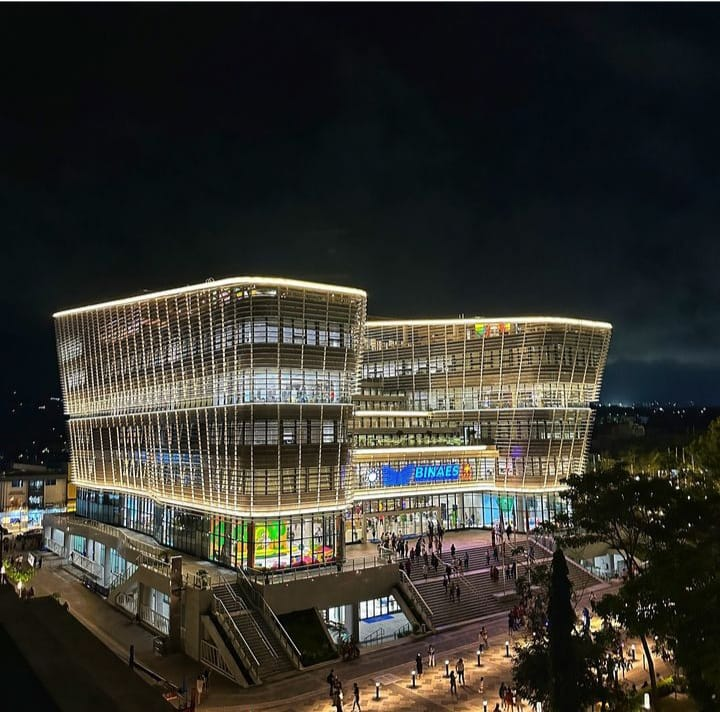
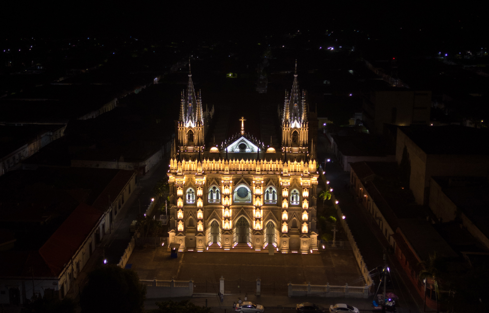
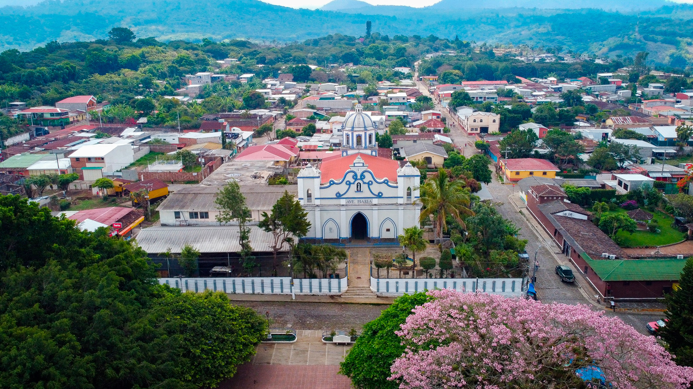

Conoce el top 3 de las Ciudades mas importantes de El salvador

San salvador
San Salvador
La capital de El Salvador es el punto de partida ideal para cualquier aventura. Aquí encontrará una
variedad de opciones para el ocio, la cultura, las compras o los negocios. Ubicada a 40 kilómetros
del Aeropuerto Internacional, la capital alberga la sede del gobierno, las principales empresas,
embajadas, hoteles boutique de gran encanto y hoteles de cinco estrellas, además de museos,
monumentos y ciudades residenciales
Ideal para el turismo de compras, San Salvador alberga modernos centros comerciales, donde
encontrará marcas internacionales de gran reconocimiento, así como marcas locales de alto valor.
El corazón de la ciudad es su Centro Histórico, donde se puede visitar el Teatro Nacional, la
Catedral Metropolitana y el Palacio Nacional. Rodeado de pequeñas tiendas que muestran la vida
comercial cotidiana de la ciudad, el centro es también un punto importante para la cultura y la
historia.

Santa Ana
Ciudad de Santa Ana
Santa Ana
Conocida como "La Ciudad Morena", "Ciudad Heroica", "Capital del Mundo" y "Sucursal del Cielo" por
ser considerada uno de los lugares más importantes y distinguidos de El Salvador.
Su centro histórico es uno de los mejores de Centroamérica, la ubicación casi perfecta de sus
edificios alrededor del Parque Libertad, le ha dado ese reconocimiento. Si visitas la ciudad de
Morena, no podés dejar de visitar la Catedral de Santa Ana, declarada Patrimonio Cultural de El
Salvador en 1995.
Muy cerca se encuentra el Teatro Nacional, uno de los más bellos y con mejor acústica y decoración
de El Salvador, fue inaugurado en 1910. Y otro sitio de visita obligada es el Palacio del
Ayuntamiento, sede del gobierno municipal.

Concepcion de Ataco
Concepción de Ataco
¡Uno de los destinos más coloridos de El Salvador te espera!
Calles empedradas, coloridos murales, artesanías, gastronomía y clima fresco, todo esto es
Ataco, otro destino junto con la Ruta de Las Flores.
Ataco se encuentra a 1.260 metros sobre el nivel del mar, rodeado de llamativos cerros llenos de
vegetación y destacados cafetales. Podrás disfrutar de una experiencia ecoturística inolvidable
ya que cuenta con espectaculares jardines, pozas de aguas termales y cascadas.
Si eres amante del café, seguramente te gustará el Tour del Café, una actividad que se ofrece en
las fincas vecinas.
También se pueden visitar los telares artesanales.
Acércate al mirador del Cerro de La Cruz, visita los talleres de artes plásticas, camina por sus
calles para observar los coloridos murales, y haz una visita a la iglesia.